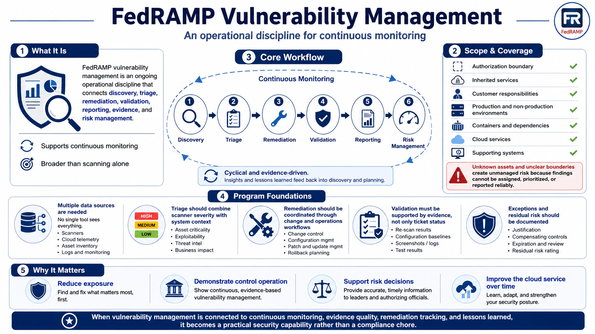

Course Summary and Key Takeaways
Connecting to LMS... Progress: in progress

Narration
FedRAMP vulnerability management is an ongoing operational discipline that connects discovery, triage, remediation, validation, reporting, evidence, and risk management. It supports continuous monitoring by showing whether the cloud service is identifying weaknesses, reducing exposure, tracking risk, and maintaining evidence over time. It is broader than scanning and more practical than a static report.
Effective programs depend on clear scope and complete asset coverage. The authorization boundary, inherited services, customer responsibilities, production and non-production environments, containers, dependencies, cloud services, and supporting systems all affect what should be monitored. Unknown assets and unclear boundaries create unmanaged risk because findings cannot be reliably assigned, prioritized, or reported.
Strong programs also depend on reliable data sources, ownership, prioritized remediation, and validation. Multiple sources are needed because no tool sees everything. Triage should include scanner severity and system context. Remediation should be coordinated through change and operations workflows. Closure should be supported by evidence, not just a ticket status. Exceptions and residual risk should be documented.
The goal is not simply to produce scan reports. The goal is to reduce exposure, demonstrate control operation, support risk decisions, and improve the cloud service over time. When vulnerability management is connected to continuous monitoring, evidence quality, remediation tracking, and lessons learned, it becomes a practical security capability rather than a compliance chore.